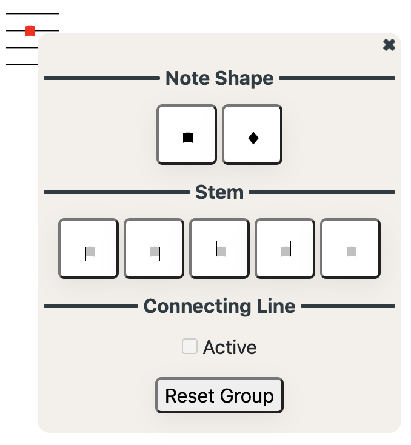
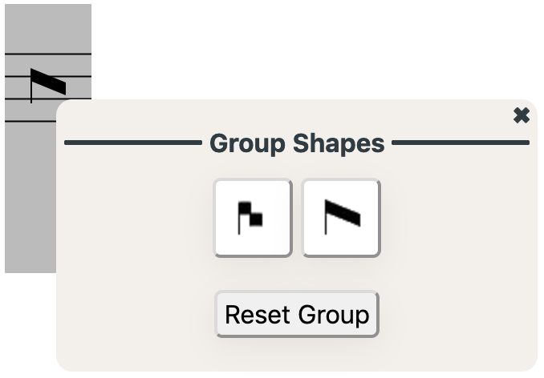
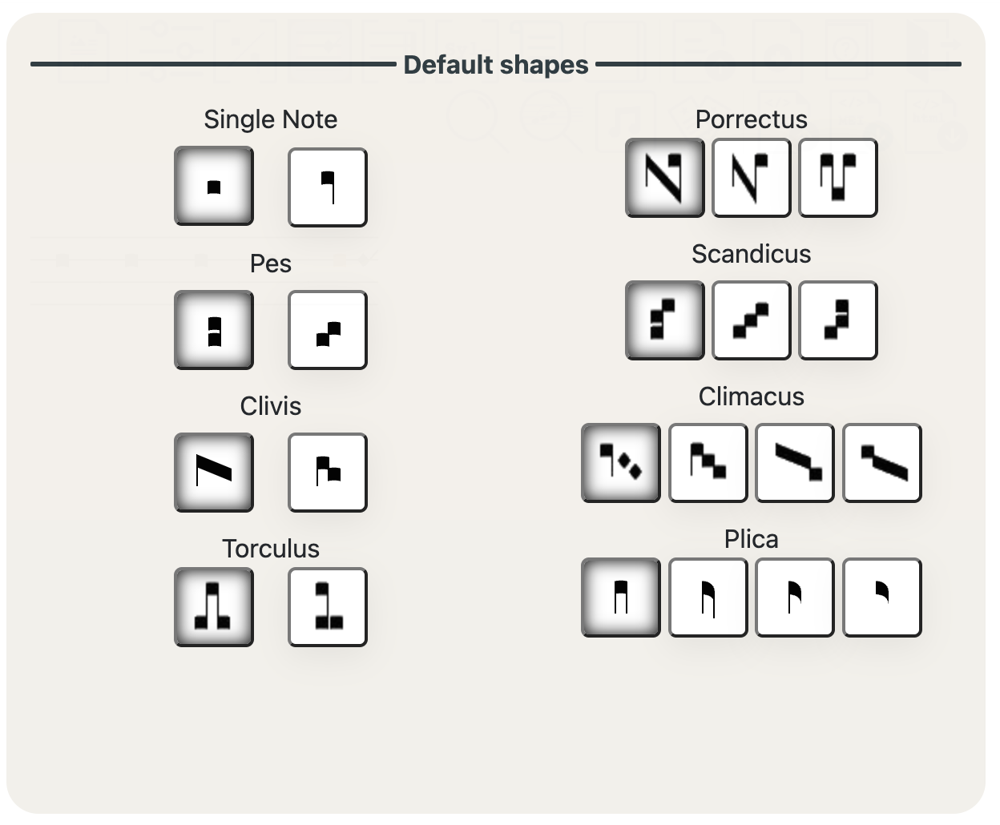
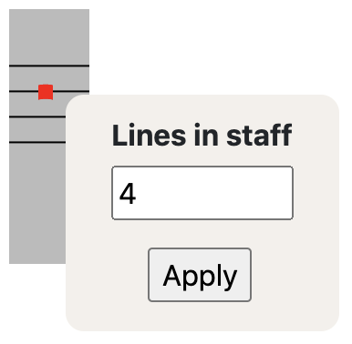
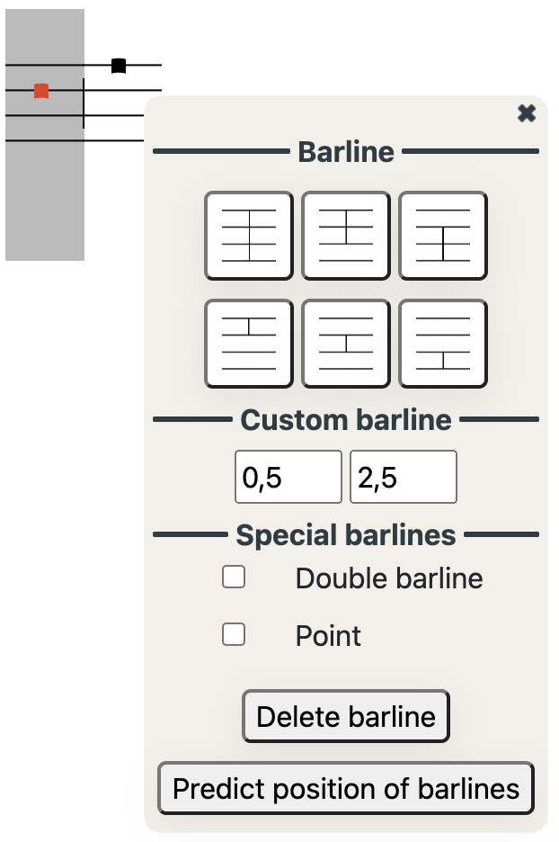
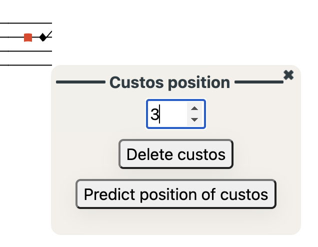
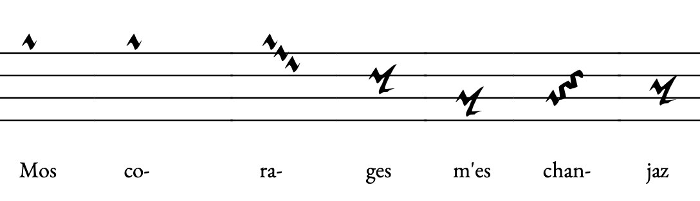

Editor and Viewer Manual
Medieval Melody Editor allows users to encode ancient music for digital editions.
Editions can be exported in PDF, HTML, and MEI or published as a part of the MedMel project.
Melodies are entered by typing the name of the note:
As MedMel is thought for non-mensural medieval monody, there are no specifications for the duration of the notes, as you can see.
To have full control of the input melody, you can use the "Notes" text area.
In the left sidebar, in Style settings, you can select to visualize and edit in Modern Style or Old Style.
MODERN STEMLESS NOTATION
MedMel uses a limited number of conventional signs:
- Blank spaces separate groups of notes sung on different syllables.
- ' : Line breaks in modern editions differ from those of the manuscripts: when changing from modern to ancient notation mode and viceversa, linebreaks are translated into apostrophes.
- ( ) : Use brackets to wrap plicas (liquescences). For example aa(G) will be visualised as such (but check the Settings section):
- - : To display two single notes on the same syllable (for metrical irregularities or any other reason), separate them with a hyphen: they will not be connected with a slur.
- / : To emphasise a break in the melody, use a slash at the end of the line. It is also possible to use in the middle of a line to separate bars, if ever needed.
- // : Use a double slash to display the final bar.
Accidentals
- h stands for "b natural" and b stands for "b flat".
- For flat accidentals other than b, type underscore (_) before the note;
- To set a b flat as a key signature, type b} (after the clef, if there is one). The bs on the line will not show their flat sign.
- When a b flat is not in the manuscript but it is implied, type an underscore before the regural h: _h. The flat will be printed on top of the note to let your reader know that the accidental is supplied by the editor. The generated melody will play b flat as well.
- For natural accidentals, type % before the note.
- For sharp accidentals, type # before the note.
MEDIEVAL NOTATION
It is possible to edit and visualize the trascription in medieval notation by selecting "Medieval notation" in the dropdown menu in the sidebar, or by clicking on the icon  .
.
The Medieval notation uses the same features of the Modern notation for notes and accidentals, but provides some additional features:
Clefs
- Clefs are relevant only in Medieval notation mode, and they are ignored in the Modern notation mode.
- Clefs are described by the type of clef (C or F) and the number of line on which it is on, counting from the top.
Neume shapes
In Medieval notation mode, the shape of the notes and ligatures can be specified with a high degree of accuracy.
- Click on a single note to choose from the single note menu. Select the shape, the stem direction and the presence of a connecting line with the following note within a note group.
- Click on the space sourranding the notes to modify the shape of the note group. This is possible only for the most common groups.


Default shapes
Instead of changing the shape of every single note, users can choose the default shapes of the most common group configuration by clicking on the icon above.
The more consistent is the copyist, the more time can be save by adjusting default shapes parameters.

Number of lines in staff
Right-click on the staff to change the number of lines it contains (default is 4).

Barlines
To add a barline in ancient notation, select the above icon or press Shift and click on the relevant area on the in the musical staff.
Users can select one of the most common barlines, or set a customised starting and ending height, select a double bar or draw a point after the bar.
By clicking "Predict position of barlines", barlines will be drawn in correspondence to metrical line breaks (provided that these are already encoded). Results can be later adjusted as needed.

Custos
To add a custos at the end of the staff, select the above icon and then click on the relevant staff, and select the correct height.
Use the "Predict position of custos" button to automatically set the custos on your transcription. These can be later modified in case of manuscript errors or exceptions.

Messine notation

MedMel provides a Messine notation encoding mode, which is activated automatically when the specified manuscript is included in our list of Messine notation sources (e.g. fr. 20050).
When transcribing from a manuscript with Messine notation that is not already in our list, please email us.
TEXT
To add the text, type it in the dedicated text area. Remember:
- A hypen ( - ) separates syllables.
Tip: click on the icon to use of MedMel's semi-automatic syllable separator. Please note that this tool works has different levels of accuracy in different laguages.
icon to use of MedMel's semi-automatic syllable separator. Please note that this tool works has different levels of accuracy in different laguages. - A new line in the text will show on a new staff (in Modern notation).
- Use underscores ( _ ) for synalephas (e.g. "-le_et" will be assigned to a single note or note group and will be visualised as "le et").
- To encode multiple stanzas, separate them with an empty line.
Text options:
- Multiple stanzas:
- To separate stanzas while trancribing, enter a blank line.
- To visualize multiple stanzas, click on the text options icon, and from the dropdown menu:
- "Concise visualization" displays the text of each stanza under the same musical staff
- "Extended visualization" displays a musical staff for each stanza.
- As a default MedMel shows only the first stanza ("First stanza only").
- Multiple texts:
- To encode and visualize multiple versions of a text (interpretative transcription, diplomatic transcription, with or without corrections, etc.) select a version of a text, or Add a new version if you are in the Editor.
FACSIMILES
Click on the Open facsimile button in the side bar, or click on the above icon in the navigation bar.
- In the viewer:
click to visualise the manuscript facsimile (when available online). Complying with copyright regulations, MedMel never stores or redistribute facsimiles, but embeds images from freely available online repositories.
Availability of images varies depending on the repository, which may disallow embedding or use an unsecure http protocol. - In the editor:
to facilitate the transcription process, MedMel allows to visualize the manuscript page directly in the editor.
Input the URL of the website of the digitised source.
Please note that this feature is entirely dependant on the repositories policies: while contents from Gallica will be visualised in high resolution, sources from the Vatican Library, for example, cannot be embedded.
ANNOTATIONS
Editorial notes or additional descriptions are entered in the Annotation text area.
To hide annotations, uncheck the relevant checkbox from the Settings menu.
This field supports HTML tags (such as <i>for italic</i> or <strong>for bold</strong>).
SETTINGS
Customize your visualisation:
- Show/Hide the letter indicating the melodic scheme. By default, this is calculated automatically. (Modern notation only)
- Decide whether to display the melodic structure as Latin or as Greek characters. (Modern notation only)
- Choose to input the melodic scheme manually. The input should be in Latin characters, separated by a space.
- Show/Hide the number of the metrical line. (Modern notation only)
- Show/Hide annotations.
- Show/Hide markers for manuscript line breaks. (Modern notation only)
- Set the shape of the liquescence (as a smaller note or "as a comma"). (Modern notation only)
- Set behaviour of accidentals: decide whether accidentals have an effect until the end of the metrical or manuscript line, and how to display them. (Modern notation only)
- Change font and font size.
SAVE AND DELETE
- Click on the above icon to save a transcription. Users need to create an account and log in to use this feature.
- MedMel collaborators can publish transcriptions as part of the database ("Publish"), store them in a common repository, where other collaborators will be able to edit and publish them ("Share with content creators"), or as a private document ("Private"). Transcriptions can be published in Modern notation, Medieval notation, or both.
NB: changing the ID, the Manuscript or the Language Field, will determine a transcription to be stored as an new entry.
To delete a transcription, click on the Delete icon.
IMPORT AND EXPORT
Click on the icon to open the Import/Export menu.
Import
Import MEI Neume files
MedMel can import XML/MEI Neume files in order to visualize, modify, store, or export them in other formats.
Import Volpiano strings
Import Volpiano strings in MedMel,to visualize, edit, or export them in MEI or other formats.
Export
Export PDF file
Download HTML file
Export the transcription encoded in XML/MEI Neume.
To encode detailed transcriptions and avoid information loss, MedMel uses additional features which are not specified in the current version of the MEI guidelines.
See specifics on MEI in MedMel.
Export Volpiano.
MedMel can be used as a what-you-see-is-what-you-get tool for Volpiano. You might prefer it because, unlike Volpiano, in MedMel the text character corresponds to the name of the pitch, making transcription more intuitive and less prone to error.
MedMel and Volpiano differ in how the neumes are separated: in MedMel, groups are always separated by a space. Volpiano, on the other hand, uses two dashes to separate neumes sung on different syllables of the same word, and three dashes to separate neumes sung on syllables of different words. Both MedMel and Volpiano encode non-connected groups sung on the same syllable as separated by a dash (e.g., cde-edc in MedMel corresponds to klm-mlk in Volpiano).
If the text is encoded with the melody in MedMel, the neumes will be separated correctly by two or three dashes when exported to Volpiano.
If no text is entered, to obtain a Volpiano string with the correct number of dashes separating the neumes, users need to add a dash before every neume corresponding to the first syllable of a new word (e.g., c d e f sung to the syllables "A-ve E-va" [not encoded] will need to be encoded as -c d -e f).
Export the transcription encoded in a MedMel file.
It is possible to save a MedMel transcription as a JSON file. This allows you to preserve a copy of the transcription without any information loss, including your customized settings. JSON files can be re-imported into MedMel, and thanks to the widespread use of the JSON format, they provide a convenient data source for analysis and reuse in other platforms.
CREATE AN ACCOUNT AND LOG IN
Click on the User icon to login or sign up.
Creating an account is necessary to save transcriptions, edit them at a later time, and publish them as a contributor.
PUBLISH EDITIONS ON THE MEDMEL PORTAL
A complete digital edition of the medieval monody of Romance lyric requires a collective effort and we are grateful to scholars who wish to publish their editions as part of the MedMel project.
To become a contributor and publish a transcription on MedMel, please write to stefano.milonia[at]gmail.com.
Every transcriptions is credited to its editor.
In order to avoid duplicates, there cannot be two public editions of the same melody (i.e. two edition with same id and same ms.). It is however possible to store duplicates as private transcriptions.